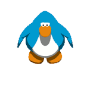
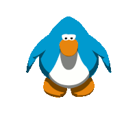

Meu primeiro post
Por: Rafael Marquezini
Se você considerar todos os fatores envolvidos na questão, perceberá que cada ponto tem sua própria relevância dentro do contexto geral.
Vou compartilhar conhecimentos sobre Qualquer coisa


Por: Rafael Marquezini
Se você considerar todos os fatores envolvidos na questão, perceberá que cada ponto tem sua própria relevância dentro do contexto geral.
Por: Rafael Marquezini
No fim das contas, o resultado final depende exclusivamente da maneira como as coisas acabam se desenrolando ao longo do tempo.
Por: Rafael Marquezini
É fundamental compreender que, para entender o todo, antes é preciso analisar cada uma das partes que compõem essa mesma totalidade.
Por: Rafael Marquezini
Diante do cenário atual, torna-se evidente que as próximas etapas serão definidas conforme o andamento das decisões que ainda estão por vir.
Por: Rafael Marquezini
Quando observamos a situação por um ângulo mais amplo, fica claro que tudo aquilo que acontece tem um motivo pelo qual está acontecendo.
Por: Rafael Marquezini
A verdadeira essência do problema reside justamente naquilo que ainda não foi plenamente solucionado pelos envolvidos no processo.